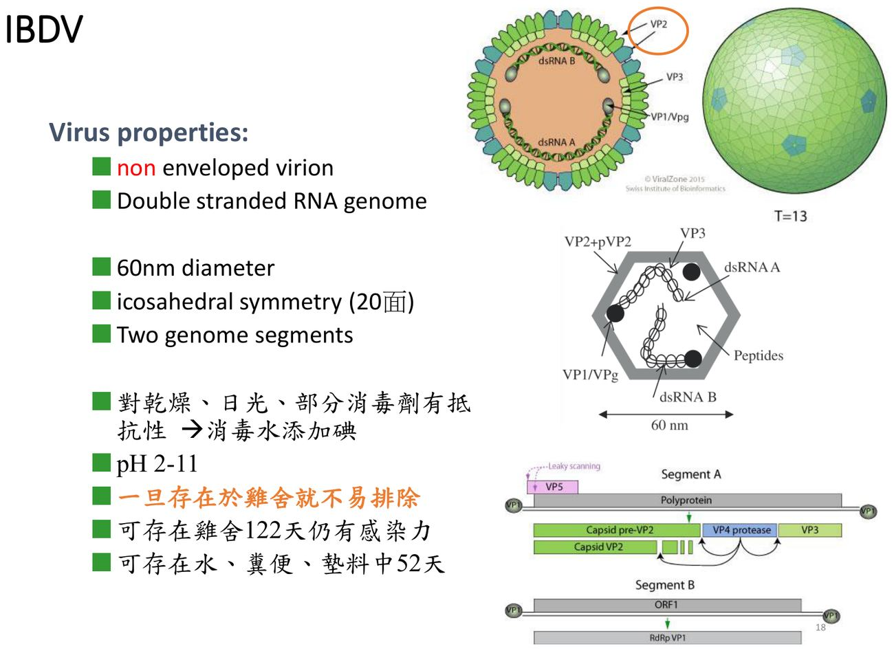
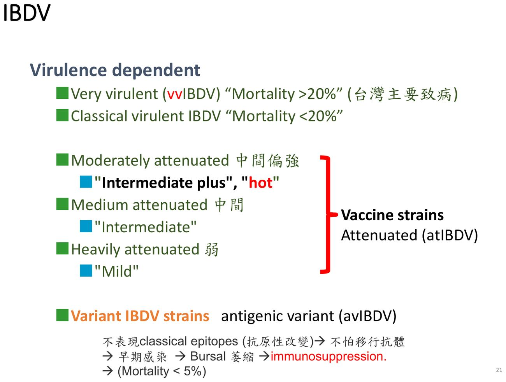
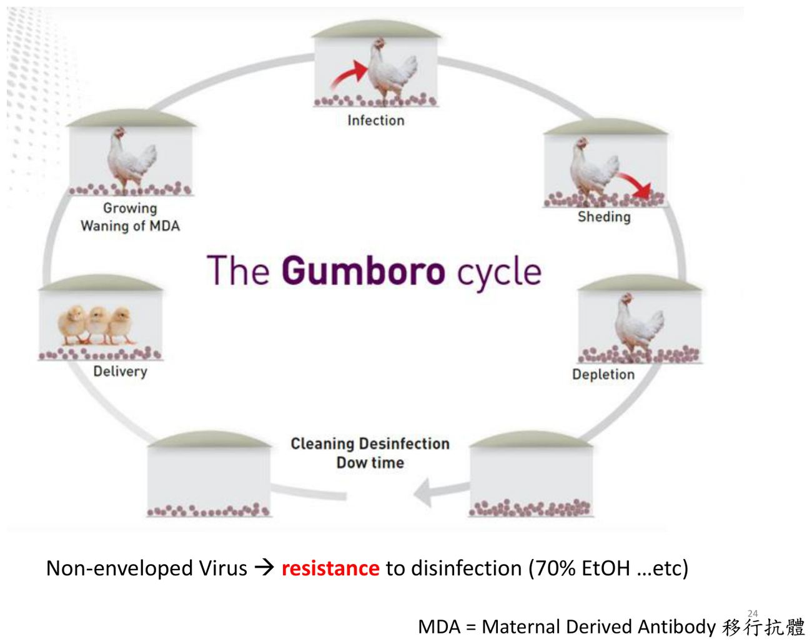
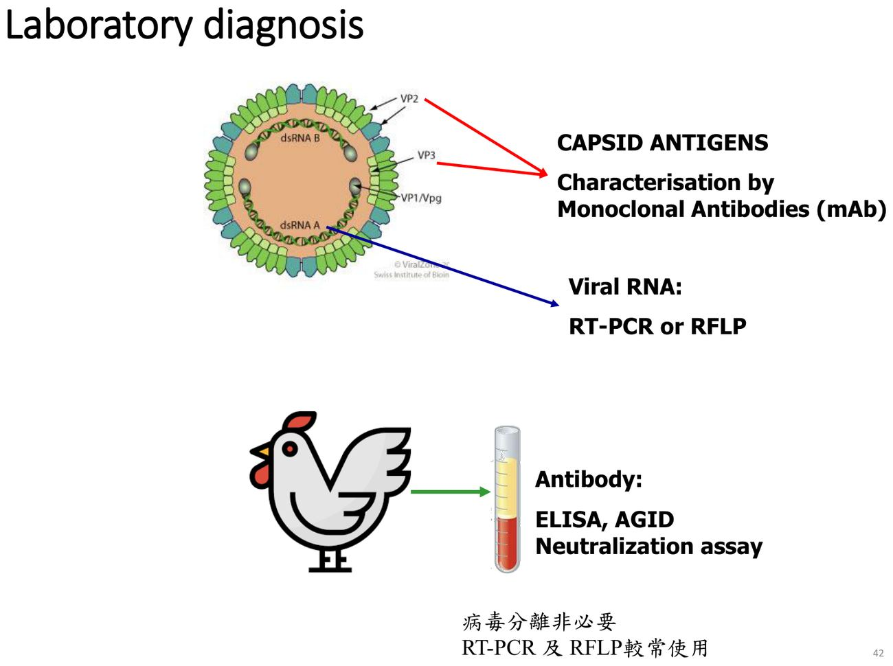
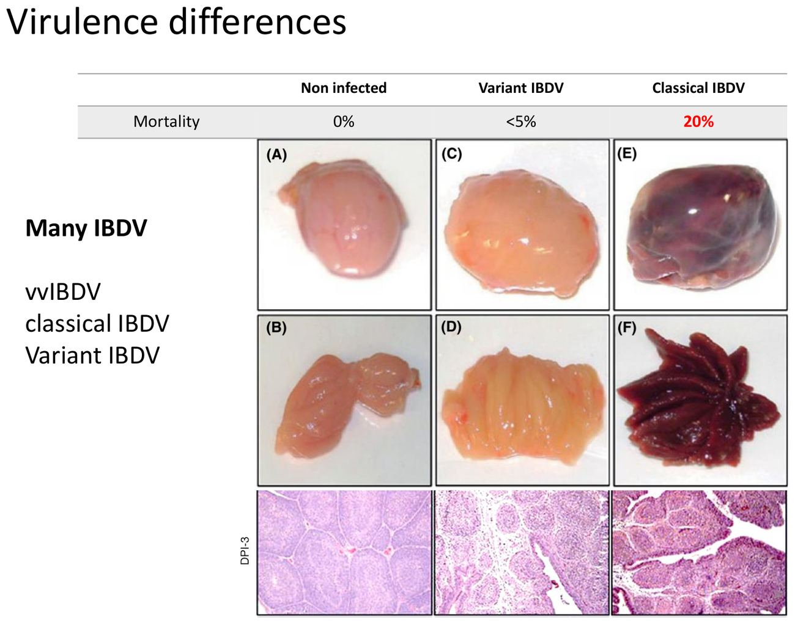

大方向與重點摘要
- 這是什麼病
- 由傳染性華氏囊病病毒（IBDV）引起的小雞急性、高傳染力病毒病，又稱甘保羅病（Gumboro disease）。病毒專門攻擊華氏囊裡未成熟的 B 細胞。注意 IBD ≠ IB：IB 是傳染性支氣管炎（第 3 週）。
- 為什麼重要
- 兩種損失：3–6 週齡雞急性死亡；3 週齡以下感染沒有症狀，但 B 細胞被破壞，造成免疫抑制，其他疫苗失效、二次感染增加。病毒沒有封套，對環境抵抗力極高，雞舍一旦汙染就不易排除。台灣 1992 年 vvIBD 大流行。
- 這章要抓的重點
-
- 華氏囊：B 細胞的初級淋巴器官，位於泄殖腔背側；移除華氏囊就無法產生抗體。
- 病毒：Birnaviridae、Avibirnavirus；無封套、雙股 RNA、兩段基因體；2 個血清型，只有血清型 1 致病，兩者無交叉保護。
- 毒力分型：vvIBDV（死亡率 > 20%）、classical（< 20%）、variant（< 5%，華氏囊萎縮）、疫苗株（mild、intermediate、intermediate plus）。
- 年齡決定表現：< 3 週齡 → 免疫抑制型；3–6 週齡 → 急性型；潛伏期 2–3 天，感染後 5–8 天死亡。
- 病變：華氏囊先腫大水腫出血、5 天後萎縮；腿與胸肌出血、腎腫大、十二指腸出血。
- 診斷：病毒分離非必要，RT-PCR 與 RFLP 最常用；抗體用 ELISA、AGID、中和試驗。
- 疫苗：種雞開產前打死毒 → 移行抗體保護小雞；小雞依移行抗體選接種時機與疫苗毒力；先弱毒基礎免疫，才能用中間毒。
- 容易混淆
- IBD 與 IB：名字只差一個字母，IBD 是華氏囊病（Birnavirus，dsRNA），IB 是傳染性支氣管炎（冠狀病毒，(+) ssRNA）。classical 與 variant：classical 讓華氏囊腫大出血，variant 讓華氏囊萎縮、死亡率低但免疫抑制明顯，而且抗原性改變、不怕移行抗體。vvIBDV：抗原性沒有改變，是靠高毒力突破較高的移行抗體。
- 考試可能怎麼問
（推測） - 病毒分類與構造（無封套 dsRNA 兩段）；血清型數與交叉保護；毒力分型與死亡率；免疫抑制型與急性型的年齡；華氏囊病變的時間變化；vvIBDV 與 variant 的差別；常用診斷方法；移行抗體與疫苗時機、中間毒疫苗的使用前提；消毒用碘。
內容以老師講義為主體。標示「補充」的段落（含「讀書補充Note」）是講義以外的延伸；標示「推測」的是依講義強調處推測的出題方向，不是考古題。考試範圍以老師上課為準。圖片為老師講義截圖。
3–6 週齡：急性死亡
- IBD ≠ IB；IBD＝Infectious Bursal Disease＝Gumboro disease。
- 好發於小雞、急性、高傳染力的病毒性疾病。
- 主要攻擊淋巴器官（特別是 bursa）。
- 對環境抵抗力高；會造成嚴重的經濟損失。
禽類免疫系統與華氏囊 Avian Immune System
先懂華氏囊在免疫裡的角色，才知道為什麼 IBD 會讓雞「什麼疫苗都打不起來」。
淋巴器官必考
| 層級 | 器官 | 功能與位置 |
|---|---|---|
| 初級 | 胸腺 Thymus | T 細胞成熟；頸部一串小葉 |
| 華氏囊 Bursa of Fabricius | B 細胞成熟；泄殖腔背側 | |
| 次級 | 脾臟、哈氏腺（Harderian gland）、骨髓 | 哈氏腺在眼眶後方，是點眼疫苗誘發局部免疫的地方（補充） |
| 次淋巴組織 | CALT、GALT、BALT | 結膜、腸道（盲腸扁桃、裴氏斑）、支氣管的黏膜淋巴組織 |
華氏囊的歷史與 B 細胞發育理解
- 1621 年解剖學家 Hieronymus Fabricius 首次完整描述華氏囊構造；1956 年 Bruce Glick 發現移除華氏囊後無法形成抗體（p.9）。
- 孵化期 21 天；B 細胞在華氏囊內形成濾泡（皮質、髓質），經基因轉換（gene conversion）產生抗體多樣性，再移到周邊。胚胎期就在發育，所以可以做蛋內接種（in ovo vaccination）（p.14）。
雞的體液免疫理解
| 免疫球蛋白 | 特徵 | 來源（講義 p.12 表） |
|---|---|---|
| IgM | 五聚體，表現在 B 細胞表面；初次反應先出現 | 血清、B 細胞表面 |
| IgY | 功能相當於哺乳類 IgG；血清濃度最高（5–10 mg/mL） | 血清、蛋黃（移行抗體） |
| IgA | 黏膜分泌為二聚或四聚體；局部免疫的主角 | 血清、膽汁、黏膜分泌 |
- 主動免疫：初次接觸抗原 IgM → IgY（經 T 細胞與細胞激素調控的類別轉換），留下記憶 B 細胞；第二次接觸反應更快、更久（p.10–13）。所以疫苗要打第二劑補強。
- 被動免疫：母雞經蛋黃把抗體傳給小雞，就是移行抗體（maternally derived antibody, MDA），也可以輸注抗血清。
病原與毒力分型 Etiology
記住三個數字：2 段雙股 RNA、2 個血清型（只有 1 型致病）、死亡率 20% 與 5% 兩個切點。
病毒特性必考
| 項目 | 內容 |
|---|---|
| 分類 | Birnaviridae（雙節段 RNA 病毒科）、Avibirnavirus 屬 |
| 構造 | 無封套、雙股 RNA、兩段基因體（Segment A、B）；60 nm；二十面體 |
| 複製 | 以胞吞作用（endocytosis）進入細胞，在細胞質、內體（endosome）內複製 |
| 抵抗力 | 耐乾燥、日光、部分消毒劑；pH 2–11 都穩定；可在雞舍存活 122 天、在水、糞便、墊料中 52 天；消毒水要添加碘 |
| 宿主 | 雞、火雞、鴨、珠雞、鴕鳥都可感染，但只有小雞會發病 |

血清型與毒力分型必考
| 分型 | 死亡率 | 特點 |
|---|---|---|
| 超強毒 vvIBDV（very virulent） | > 20% | 台灣主要致病株；抗原性不變，靠高毒力突破移行抗體（見第 8 節） |
| 典型強毒 classical virulent | < 20% | 華氏囊腫大出血 |
| 變異株 variant（avIBDV） | < 5% | 抗原性改變（不表現 classical 抗原決定位）→ 不怕移行抗體 → 早期感染 → 華氏囊萎縮 → 免疫抑制 |
| 疫苗株（attenuated, atIBDV） | — | 中間偏強（intermediate plus，「hot」）、中間（intermediate）、弱（mild） |

※ 講義 p.22 的世界地圖：variant 株主要在美洲，vvIBDV 廣布歐亞非。
傳播與致病機轉 Transmission & Pathogenesis
同一個病毒，雞幾週齡被感染決定了結局：太小 → 一輩子免疫抑制；3–6 週 → 急性病死。
傳播必考
- 經糞便傳播、眼口感染：帶病毒糞便汙染雞舍、飼料、飲水 → 經口鼻進入消化道與呼吸道。
- 接觸傳播；機械性傳播（人、車、箱籠）。
- 病雞移走後 4 個月內，雞舍殘留病毒仍可感染新雞。
補充：講義沒有提到垂直傳播；IBD 的「垂直」關係是母雞經蛋黃給抗體（移行抗體），不是給病毒。

致病機轉與年齡必考
| 感染週齡 | 結果 |
|---|---|
| < 3 週齡 | 感染造成免疫抑制，通常沒有明顯症狀；B 細胞在生命早期被破壞，可能終生免疫抑制 |
| 3–6 週齡 | 出現臨床型（急性型）；一般 3–20 週齡間都可發病，以 3–6 週齡最多 |
- 潛伏期 2–3 天；感染後 5–8 天死亡。
- 病毒感染華氏囊細胞，主要是未成熟 B 細胞；成熟 B 細胞是產生抗體的細胞（p.25）。
小雞的 B 細胞還在華氏囊裡成熟，這時被破壞，之後就沒有足夠的 B 細胞產生抗體，所以雖然不死，但所有疫苗都打不起來，二次感染也變多。臨床上「這場雞什麼疫苗都沒效」時要想到早期 IBD（或雞傳染性貧血、馬立克病）。
臨床症狀 Clinical Signs
急性型看得到：水樣下痢、啄肛、站不起來；免疫抑制型看不到，只看到「長不好、疫苗失效」。
兩種病型必考
| 急性型 | 免疫抑制型 | |
|---|---|---|
| 週齡 | 3–6 週齡 | < 3 週齡 |
| 病程 | 傳播快，急性發病 2–3 日死亡 | 不常見臨床症狀 |
| 症狀 | 精神沉鬱、食慾差、羽毛蓬鬆、換肉率差；水樣下痢 → 墊料潮濕、脫水、嚴重時無法站立；血樣下痢（華氏囊出血）；啄肛 → 尾巴變短、尾毛濕、掉、出血，甚至腸被拉出 | 華氏囊病變、萎縮 → 免疫抑制 → 二次性感染、其他疫苗效力降低；生長差、疫苗失效 |
補充：啄肛的原因推測是華氏囊位於泄殖腔背側，發炎疼痛讓雞啄自己或同伴的肛門，講義只列出現象。
死亡率必考
肉眼與組織病變 Lesions
華氏囊的大小會「先腫後縮」：看到腫大出血是急性期，看到萎縮可能是後期或變異株。
華氏囊的時間變化必考
其他肉眼病變必考
組織病變理解
- 正常華氏囊濾泡完整，可分皮質（C）與髓質（M）。
- 感染後濾泡內淋巴細胞大量壞死，之後濾泡內形成囊腫（cysts）（p.40）。
實驗室診斷 Diagnosis
IBD 的診斷不只要「有沒有」，還要「是哪一型」：vvIBDV、classical、variant 還是疫苗株。
方法總覽必考
| 目標 | 方法 | 重點 |
|---|---|---|
| 病毒 RNA | RT-PCR、RFLP | 最常用；RFLP 用限制酶切 VP2 片段，看片段長度圖譜區分病毒型別 |
| 衣殼抗原 | 單株抗體（mAb）定性；抗原捕捉 ELISA（AC-ELISA） | 用 8 株單株抗體做三明治 ELISA 分「病毒類型」；例如有些 vvIBDV 缺少抗原 3、4 |
| 抗體 | ELISA、AGID、中和試驗（VN） | 用於族群監測與疫苗後免疫狀態（講義 p.41 表） |
| 病毒分離 | 雞胚 CAM、華氏囊初代細胞、SPF 雞 | 非必要；見下 |

病毒分離理解
- 採樣：急性期的華氏囊。
- 9–11 日齡 SPF 雞胚 CAM 接種：約 3 天死亡，出血、水腫。
- 華氏囊初代細胞：不建議用於 vvIBDV。
- SPF 雞：最好的病毒分離方法，接種後 3 天從華氏囊分離。
分子定型與抗體檢測理解
毒力差異與超強毒株 Virulence & vvIBDV
把各型 IBDV 對華氏囊的影響排在時間軸上，就能看出「疫苗株會再生、野外株會萎縮」。
各型對華氏囊的影響必考

| 毒株 | 感染後 1–8 天 | 14–21 天 |
|---|---|---|
| mild（疫苗） | 無影響 | 無影響 |
| intermediate（疫苗） | 第 5–8 天受影響 | 再生 |
| intermediate plus（疫苗） | 第 2–8 天受影響 | 再生 |
| classical | 第 2 天起受影響，第 3–5 天出血 | 萎縮 |
| very virulent | 第 1 天起受影響，第 3–5 天出血 | 萎縮 |
| variant | 第 3 天起受影響，不出血 | 萎縮 |
講義的結論：疫苗株 → 華氏囊再生；野外 IBDV → 華氏囊出血；variant → 萎縮（p.51）。
vvIBDV 的特徵必考
| 面向 | 內容 |
|---|---|
| 病原性 | SPF 雞死亡率可達 100%；蛋雞 50–60%、肉雞 25–30%；能突破較高的移行抗體 |
| 抗原性 | 不變：用中和單株抗體檢查沒有明顯抗原漂移 |
| 分子特徵 | VP2 高變異區定序或 RFLP；第 222Ala、256Ile、294Ile、299Ser 胺基酸＝ vvIBDV 的基因指紋 |
variant：抗原性改變，移行抗體認不得它。vvIBDV：抗原性沒變，是毒力高到可以突破較高的移行抗體。
預防與疫苗 Prevention & Vaccination
IBD 疫苗的核心矛盾：移行抗體會中和疫苗，但移行抗體掉下去又會讓野外株趁虛而入；疫苗太強又會傷華氏囊。
預防與控制必考
- 生物安全：統進統出、徹底消毒（碘）。
- 種雞產蛋前注射死毒疫苗 → 移行抗體保護小雞（被動免疫）。
- 適當時間注射活毒疫苗（主動免疫）；不同雞場會有不同防疫計畫。
- 疫苗種類、毒力、劑型很多（投水口服、多價肌肉注射、MD＋IBD 次單位疫苗）；施打前都要考慮移行抗體力價與各場 IBDV 的分布與過往情形。
移行抗體空窗期必考
① 中間偏強（intermediate plus）：可在移行抗體較高時就接種，早期防範 vvIBDV。② 中間毒：要等移行抗體更低才接種，防範 vvIBDV 的時間較晚。③ 疫苗的毒力不可超過移行抗體保護太多，否則會造成華氏囊萎縮（p.57）。
不同毒力疫苗的取捨必考
| 疫苗 | 被移行抗體中和的程度 | 使用限制 |
|---|---|---|
| Mild 弱毒 | 低量移行抗體就能中和 | 組織培養適應的 mild 株在 4 週齡 SPF 雞可能不誘發免疫（推測缺乏受體） |
| Intermediate 中間 | 低至中量移行抗體可中和 | 相對安全，可蛋內或出殼時使用 |
| Intermediate plus 中間偏強 | 高量移行抗體才能中和 | 除非經過修飾，不能蛋內接種 |
- 疫苗株越強 → 免疫越快建立，但對華氏囊傷害越大 → 會影響其他需要的疫苗（p.58）。
- 只有會造成華氏囊損傷的毒株才能誘發免疫反應；毒力越高，華氏囊損傷與血清反應越早（p.61）。
- IBD 造成的免疫抑制（以 ND 抗體力價觀察）：感染後第 1 天明顯、第 7 天中度、第 14、21 天無（Faragher et al., 1974；p.59）。
- 疫苗保護的主要問題：移行抗體高低不一、飲水給予的品質不一、要配合流行病學狀況（p.62）。
台灣圓桌會議推薦的免疫計畫必考
| 區域 | 計畫 |
|---|---|
| 危險區 | 4 日齡：弱毒飲水，同時 ND-IBD 油質死毒皮下注射；必要時 18–21 日齡中間毒飲水補強 |
| 一般區 | 1 週內弱毒飲水，18–21 日齡中間毒飲水補強（移行抗體力價差異大時比照危險區） |
小雞應先經過弱毒疫苗基礎免疫，才可使用中間毒疫苗，以免華氏囊遭受破壞而影響所有疫苗的免疫效果。雛群未經血清學評估就直接用中間偏強疫苗株，容易造成華氏囊退行性變化、免疫功能下降（p.63）。
※ 講義 p.64 提到 109 年後推動養雞場重複使用墊料；因為 IBDV 在墊料中可存活 52 天，重複墊料時的病原管理更重要（後半句為推論）。
鑑別比較 Differential Diagnosis
把會造成免疫抑制、或會在華氏囊留下病變的病放在一起比。
IBD 與 IB：名稱相近，完全不同的病必考
| 傳染性華氏囊病（IBD） | 傳染性支氣管炎（IB） | |
|---|---|---|
| 病毒 | Birnaviridae；無封套 dsRNA 兩段 | 冠狀病毒科；有封套 (+) ssRNA |
| 標的 | 華氏囊未成熟 B 細胞 | 呼吸道、腎臟、輸卵管、腺胃（依型別） |
| 血清型 | 2 個（只有 1 型致病） | 很多，交叉保護差 |
| 共同點 | 都可能造成腎臟腫大，看到腎病變時要一起想（IBD 講義 p.36；IB 見第 3 週） | |
會造成免疫抑制的病（跨講義整理）理解
| 傳染性華氏囊病（IBD） | 雞傳染性貧血（CIA） | 馬立克病（MD） | |
|---|---|---|---|
| 病毒 | Birnavirus，dsRNA | 環狀病毒，ssDNA | 疱疹病毒，dsDNA |
| 破壞的細胞 | 華氏囊B 細胞 | 胸腺 T 細胞前驅細胞與骨髓造血細胞 | B 細胞 → T 細胞，之後潛伏與轉形 |
| 關鍵病變 | 華氏囊腫大出血 → 萎縮 | 貧血、骨髓變黃、胸腺萎縮、皮下出血 | 神經腫大、內臟腫瘤 |
| 詳見 | 本頁 | 雞傳染性貧血頁 | 馬立克病頁 |
※ CIA 講義寫明 IBD、MD、Reo 會增加 CAV 的致病力、延遲年齡抵抗性（CIA 講義 p.13），所以這幾個病常一起出現。
考試方向（推測）
以下是依講義強調的內容推測的出題方向，不是考古題，考試範圍以老師上課為準。
| 可能考法 | 答題重點 |
|---|---|
| IBDV 分類與構造 | Birnaviridae、Avibirnavirus；無封套、dsRNA、兩段；60 nm |
| 血清型 | 2 個；只有 1 型致病、只有雞是自然宿主；兩型無交叉保護 |
| 毒力分型與死亡率 | vvIBDV > 20%（台灣主要）、classical < 20%、variant < 5% |
| variant 為什麼不怕移行抗體 | 抗原性改變（不表現 classical 抗原決定位）→ 早期感染 → 華氏囊萎縮 → 免疫抑制 |
| vvIBDV 的特徵 | 抗原性不變，靠高毒力突破移行抗體；VP2 胺基酸 222A、256I、294I、299S |
| 年齡與病型 | < 3 週：免疫抑制（可終生）；3–6 週：急性；潛伏 2–3 天，5–8 天死亡 |
| 華氏囊病變時序 | 2–4 天腫大水腫出血 → 5 天後萎縮；組織：濾泡淋巴細胞壞死、囊腫 |
| 其他病變 | 脫水、胸腿肌出血、腎腫大、十二指腸出血 |
| 常用診斷 | RT-PCR、RFLP；病毒分離非必要（最好用 SPF 雞）；AC-ELISA 用 8 株 mAb 分型 |
| 環境抵抗力與消毒 | 無封套；pH 2–11；雞舍 122 天、墊料 52 天；用碘 |
| 疫苗策略 | 種雞開產前死毒 → 移行抗體；小雞依移行抗體選時機；先弱毒基礎免疫再用中間毒 |
| 台灣建議計畫 | 危險區 4 日齡弱毒飲水＋ND-IBD 油質死毒皮下，18–21 日齡中間毒；一般區 1 週內弱毒、18–21 日齡中間毒 |
練習題 Practice Quiz
IBDV 屬 Birnaviridae（bi＝兩段、rna），無封套、dsRNA、兩段（Segment A、B）。(A) 像 IB、ND；(C) 是雞傳染性貧血病毒；(D) 是疱疹病毒（MD、ILT）。
血清型 2 無致病性；兩型間無交叉保護。(D) 描述的是傳染性支氣管炎。
variant 抗原性改變，移行抗體認不得 → 早期感染 → 華氏囊萎縮 → 免疫抑制，死亡率 < 5%。(A) 是 vvIBDV 的特點（抗原性不變）。
(A)、(D) 是雞傳染性貧血病毒的標的；(C) 是馬立克病病毒釋出完整病毒的地方。
(B) 馬立克病；(C) 傳染性喉頭氣管炎；(D) 雞傳染性貧血（藍翅病）。
(1) 傳染性華氏囊病急性型（3–6 週齡、水樣下痢、啄肛、華氏囊腫大出血、肌肉出血、腎腫大）；死亡率高時要懷疑 vvIBDV。
(2) 取急性期華氏囊做 RT-PCR，再以 VP2 定序或 RFLP 分型（vv、classical、variant 或疫苗株）；也可用 AC-ELISA。
(3) 華氏囊萎縮 → 免疫抑制 → 其他疫苗（如 ND）效果變差、二次感染增加、生長差。
(4) 統進統出、徹底清潔後用碘消毒（病毒可存活數月）；檢查種雞移行抗體與小雞疫苗計畫（危險區 4 日齡弱毒飲水＋ND-IBD 油質死毒皮下，18–21 日齡中間毒補強）。